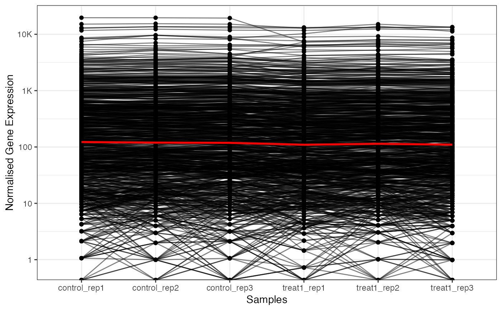
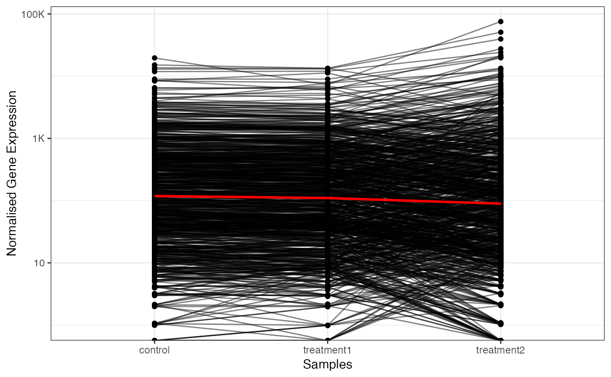
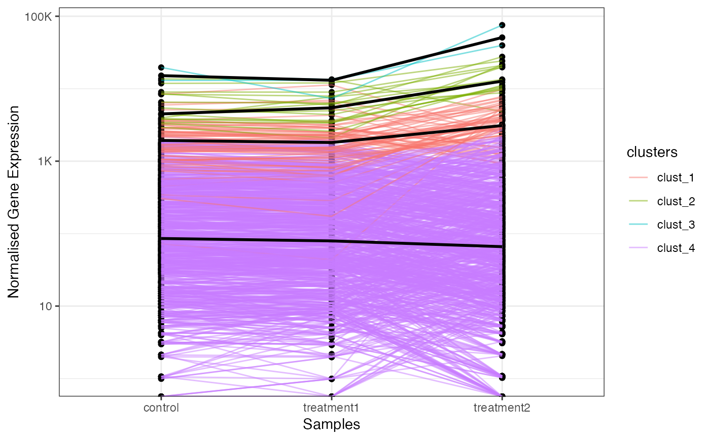

Generate a line plot for gene expression / fold change values.
Source:R/viz_related.R
get_gene_expression_line_plot.RdGenerate a line plot for gene expression / fold change values.
Usage
get_gene_expression_line_plot(
x,
samples,
genes,
km = NULL,
facet_clusters = FALSE,
summarise_replicates = TRUE,
summarise_method = "median",
scale_log10 = TRUE,
line_transparency = 0.5,
show_average_line = TRUE,
average_line_color = "black",
average_line_size = 1,
average_line_summary_method = "median"
)
get_fold_change_line_plot(
x,
sample_comparisons,
genes,
km = NULL,
facet_clusters = FALSE,
line_transparency = 0.5,
show_average_line = TRUE,
average_line_color = "black",
average_line_size = 1,
average_line_summary_method = "median"
)Arguments
- x
an abject of class
parcutils. This is an output of the functionrun_deseq_analysis().- samples
a character vector denotes sample names to show in the line plot.
- genes
a character vector denotes genes to show in the line plot.
- km
a numeric or NULL, default
NULL, denotes number of clusters for k-means clustering. IfNULLdata will be plotted without clustering.- facet_clusters
a logical, default FALSE, denoting whether to facet clusters. Works only when km is set to a numeric value.
- summarise_replicates
logical, default TRUE, indicating whether to summarise values for each gene across replicates.
- summarise_method
a character string, default
"median", denotes a summary method to average gene expression values across replicates. Values can be one of the"mean"or"median".- scale_log10
logical, default
TRUE, denotes whether to transform scale Y on log10.- line_transparency
a numeric, default 0.5, denotes transparency of each line in the line plot.
- show_average_line
logical, default TRUE, denotes whether to show a line for average gene expression.
- average_line_color
a character string, default
"black", denotes a color for an average line.- average_line_size
a numeric, default 1, denotes a size for an average line.
- average_line_summary_method
a character string, default
"median", denoting a summary method used to generate an average line. Values can be one of the"mean"or"median".- sample_comparison
a character string denoting a valid differential gene comparison. Possible comparisons can be found from x$de_comparisons.
Examples
count_file <- system.file("extdata","toy_counts.txt" , package = "parcutils")
count_data <- readr::read_delim(count_file, delim = "\t", show_col_types = FALSE)
sample_info <- count_data %>% colnames() %>% .[-1] %>%
tibble::tibble(samples = . , groups = rep(c("control" ,"treatment1" , "treatment2"), each = 3))
res <- parcutils::run_deseq_analysis(counts = count_data ,
sample_info = sample_info,
column_geneid = "gene_id" ,
group_numerator = c("treatment1", "treatment2") ,
group_denominator = c("control"))
#> ℹ Running DESeq2 ...
#> converting counts to integer mode
#> Warning: some variables in design formula are characters, converting to factors
#> estimating size factors
#> estimating dispersions
#> gene-wise dispersion estimates
#> mean-dispersion relationship
#> final dispersion estimates
#> fitting model and testing
#> ✔ Done.
#> ℹ Summarizing DEG ...
#> ✔ Done.
genes = parcutils::get_genes_by_regulation(x = res, sample_comparison = "treatment2_VS_control" , "both") %>% names()
# line plot with all replicates
get_gene_expression_line_plot(x = res,
samples = c("control", "treatment1"),
genes = genes, line_transparency = 0.5,
average_line_color = "red",
summarise_replicates = FALSE)
#> Warning: Transformation introduced infinite values in continuous y-axis
#> Warning: Transformation introduced infinite values in continuous y-axis

# line plot with replicate average
get_gene_expression_line_plot(x = res,
samples = c("control", "treatment1" ,"treatment2"),
genes = genes, line_transparency = 0.5,
average_line_color = "red",
summarise_replicates = TRUE)
#> Warning: Transformation introduced infinite values in continuous y-axis
#> Warning: Transformation introduced infinite values in continuous y-axis

# line plot with k-means clustering
get_gene_expression_line_plot(x = res,
samples = c("control", "treatment1" ,"treatment2"),
km = 4,
genes = genes, line_transparency = 0.5,
average_line_color = "black",
summarise_replicates = TRUE)
#> Warning: Transformation introduced infinite values in continuous y-axis
#> Warning: Transformation introduced infinite values in continuous y-axis

# line plot with k-means clustering faceted
get_gene_expression_line_plot(x = res,
samples = c("control", "treatment1" ,"treatment2"),
km = 4,facet_clusters = TRUE,
genes = genes, line_transparency = 0.5,
average_line_color = "black",
summarise_replicates = TRUE)
#> Warning: Transformation introduced infinite values in continuous y-axis
#> Warning: Transformation introduced infinite values in continuous y-axis
# fold change lineplot
get_fold_change_line_plot(x = res,
sample_comparisons = c("treatment1_VS_control", "treatment2_VS_control"),
genes = genes,km = 4,
average_line_summary_method = "mean")